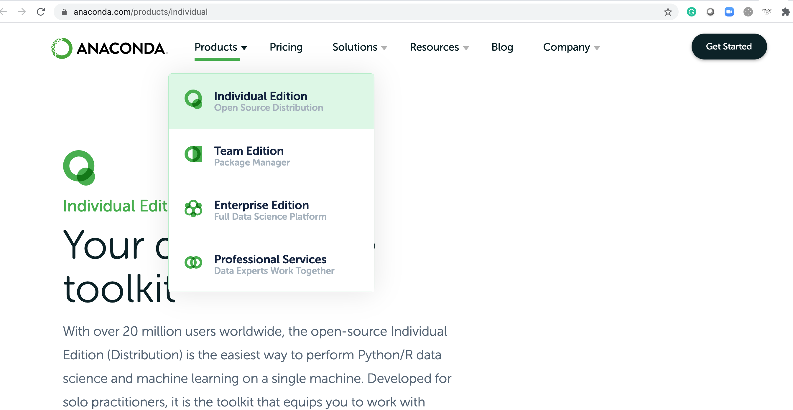
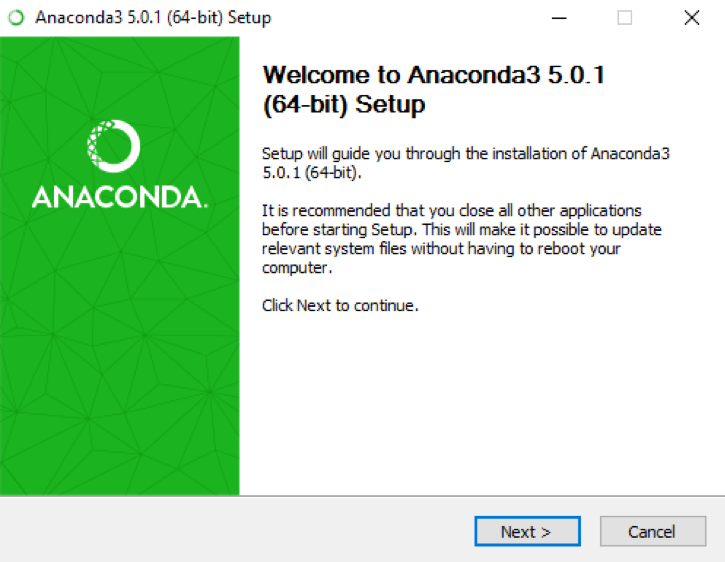
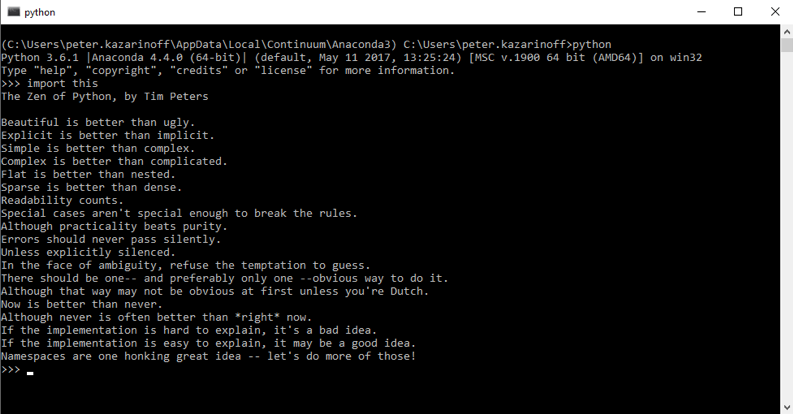
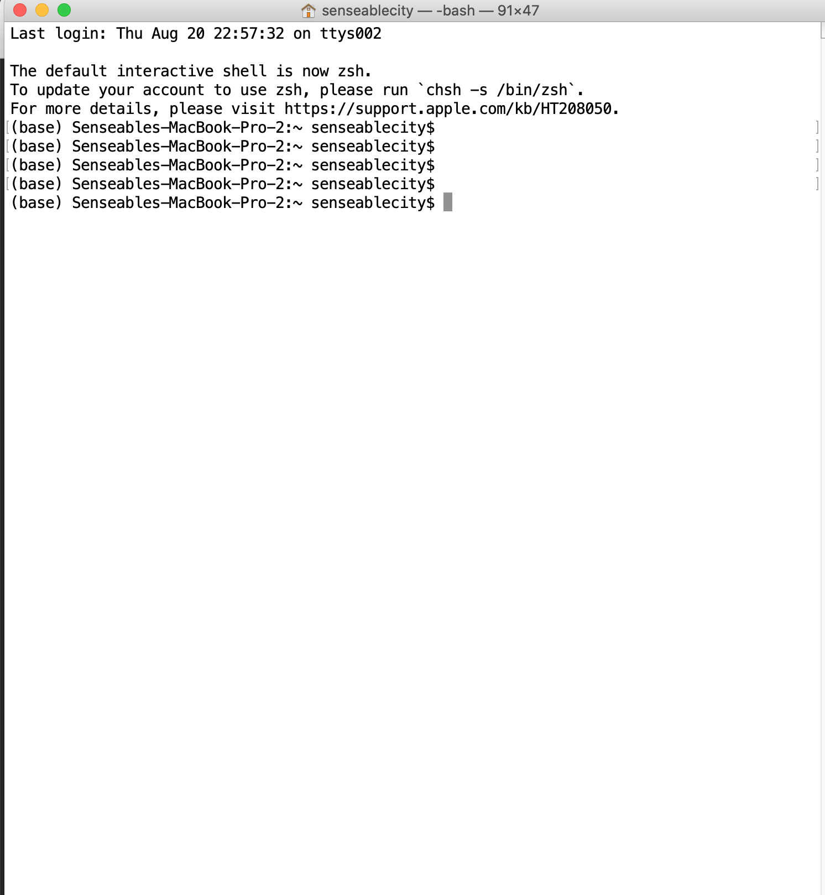
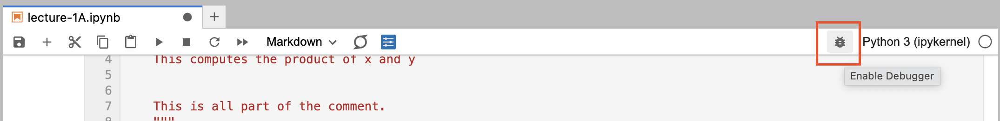
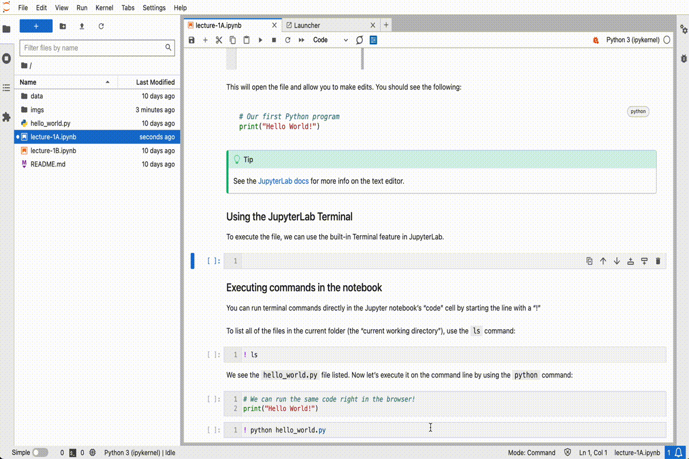
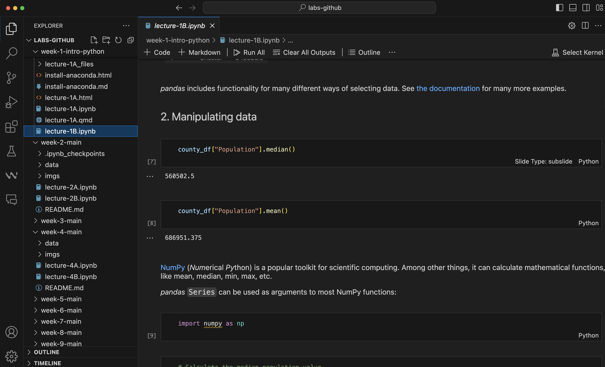

Dr. Xiaojiang Li
Assistant Professor, University of Pennsylvania
Use Python to gather, visualize, and analyze geospatial data with an urban planning and public policy focus.
Anaconda is a popular distribution of the Python and R programming languages, specifically designed for data science and machine learning. It simplifies the setup and management of Python environments and packages, making it an excellent choice for beginners and experienced users alike.
Go to the website to download Anaconda for different OSs.

Select the right Anaconda for your computer.
Locate you downloaded Anaconda installer and then double click it to install. For Windows and MacOS, the installing is the same, just keep following the instructions by default.

Anaconda Prompt. For Mac, go to your terminal and type in conda.When you have the Anaconda installed successfully, then you can open your Anaconda terminal (command line) and create virtual environment for Python programming.
Anaconda Powershell Prompt terminal first conda info -e in your terminal, you should see the base environment. The base is the default Python environment. We usually don’t install Python modules in the base.geospatialconda create --name geospatial numpy shapely matplotlib rasterio fiona pandas ipython pyproj gdal jupyter geopandas.
yml file to setup the environment. Using this way, you can manage the version of different modules. This is recommended. Download the yml file hereThen in your terminal, navigate to the directory where you saved the env.yml file, and run the following command: conda env create -f env.yml
Using this command, you can install most needed modules in this class. It is pretty straightforward to install the modules you need in Anaconda. I usually try to use pip first to install the module, for example, pip install rasterio. If it does not work, then I will try to use conda to install the module, for example, conda install rasterio.
Now we have the required environment ready. Let’s start the Jupyter Notebook and then write your Python code.
Go to your terminal. Make sure the geospatial is activated.
Note: If you still see the base, you need to activate it first by typing conda activate geospatial in the terminal. If you want to go back to base, you can also deactivate it, conda deactivate. In this way, you can swich between different virtual environment, which can be created for different purposes.
Start the Jupyter Notebook by typing jupyter notebook in the terminal. Then you web browser will start automatically and guide you to the notebook. You can then write Python code over there.
In Jupyter notebooks, cells are devided into two major types, markdown, will be used for documentation, code used for running script.
Python is an increasingly popular high-level programming language. It emphasizes legibility over highly complex structure. Python innately provides simple data structures allowing for easy data manipulation.
Variables store data. You don’t need to declare their type—Python figures it out automatically.
Note: # is used to comment a line. Anything after it will not be executed.
Lists hold ordered collections of items.
d[0] (first item), d[-1] (last item)d[2:5] (items 2 to 4), d[:3] (first three items), d[5:] (items from index 5 to end)d.append(10) (adds 10 to the end)Dictionaries store key-value pairs. We usually use dictionary to manage the geospatial information of the spatial datasets, like shapefile, geotiff raster data.
f['key1']f['key4'] = 4print(f)print(f.keys())print(f.values())f = {'key1': 1, 'key2': 2, 'key3': 3}
print(f.values())
# Add a new key-value pair
f['key4'] = 4
# Loop through dictionary keys and values
for key, value in f.items():
print(key, value)dict_values([1, 2, 3])
key1 1
key2 2
key3 3
key4 4Booleans represent True/False values. We use this for conditional logic.
e = False
f = True
res = 3 > 5 # False
test = 1==3 # False
a = 10
if a > 5:
print("a is greater than 5")
elif a == 5:
print("a is equal to 5")
else:
print("a is less than 5")a is greater than 5Strings are sequences of characters.
c[0]c[2:5] (characters 2 to 4), c[:3] (first three characters), c[5:] (characters from index 5 to end)Important
Be sure to use the right indentation in for loops!
. . .
# Variable that will track the sum
result_sum = 0
# Variable i takes on values [0, 1, 2, 3, 4, 5, 6, 7, 8, 9]
for i in range(0, 10):
# Indented, so it runs for each iteration of the loop
print(i)
result_sum = result_sum + i0
1
2
3
4
5
6
7
8
9. . .
You can enable Debugging mode in JupyterLab by clicking on the “bug” icon in the top right:
This should open the Debugger panel on the right side of JupyterLab. One of the most useful parts of this panel is the “Variables” section, which gives you the current values of all defined variables in the notebook.
Tip
For more information on the debugger, see the JupyterLab docs.
Additional Python resources are listed on our course website under “Resources”
https://musa-550-fall-2023.github.io/resource/python.html
In addition to the DataCamp videos, there are links to lots of online tutorials:
In this class, we will almost exclusively work inside Jupyter notebooks — you’ll be writing Python code and doing data analysis directly in the notebook.
The more traditional method of using Python is to put your code into a .py file and execute it via the command line (known as the Miniforge/Anaconda Prompt on Windows or Terminal app on MacOS).
See this section of the Practical Python Programming tutorial for more info.
There is a file called hello_world.py in the repository for week 1. If we execute it, it should print out “Hello, World” to the command line.
First, let’s open up the .py file in the JupyterLab text editor. Double click on the “hello_world.py” item in the file browser on the left:
This will open the file and allow you to make edits. You should see the following:
Tip
See the JupyterLab docs for more info on the text editor.
To execute the file, we can use the built-in Terminal feature in JupyterLab using the following steps:
python hello_world.pyAnd you should see the following output:
Hello World!It should look something like this:
The JupyterLab text editor will work in a pinch, but it’s not usually the best option when writing software outside the notebook. Other code editors will provide a nice interface for writing Python code and some even have fancy features, like real-time syntax checking and syntax highlighting.
My recommended option is Visual Studio Code.
image.png